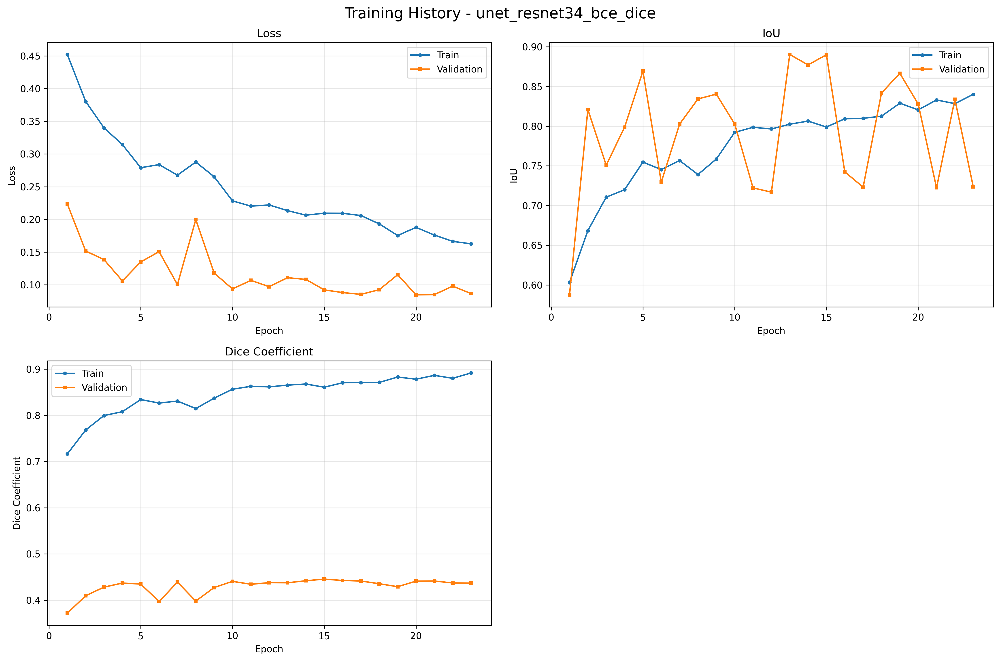
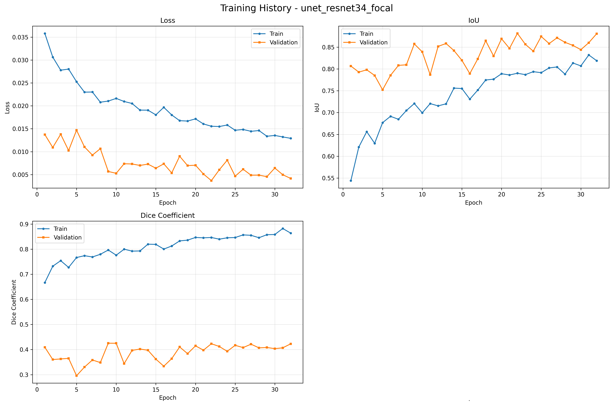
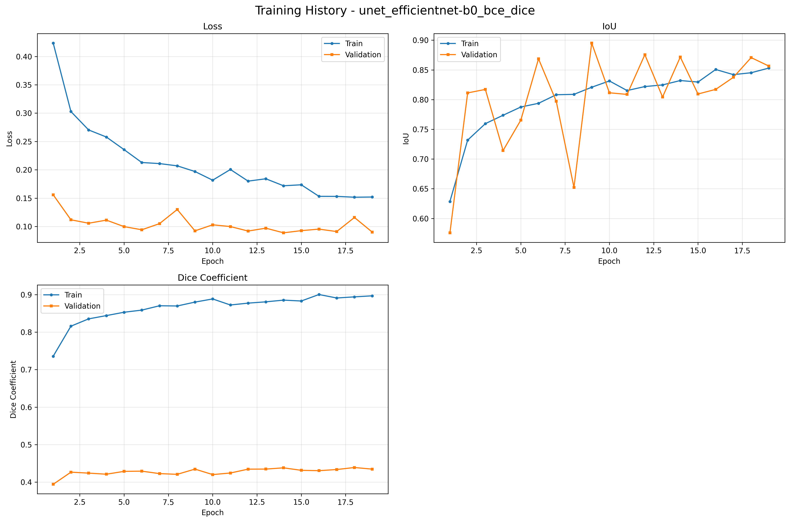
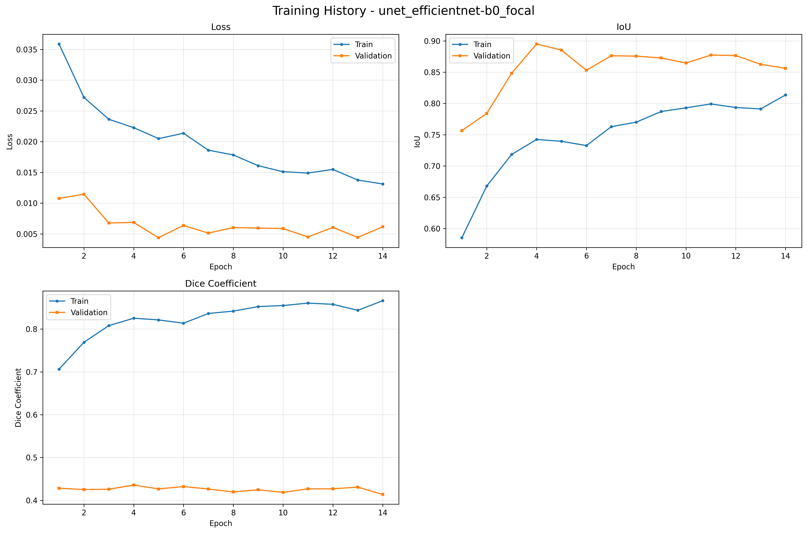
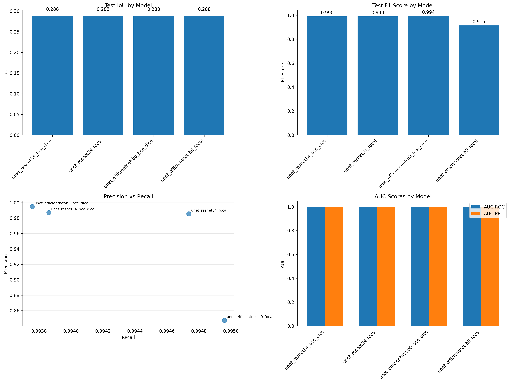

Insights & Challenges in Binary Slum Detection
This week, a UNet-based binary segmentation pipeline was developed and evaluated for slum detection from satellite imagery. Despite implementing advanced augmentation, multiple loss functions, and post-processing, the models struggled with low IoU and misleadingly high F1 scores due to severe class imbalance and dataset challenges. The results highlight the need for improved data quality, better handling of class imbalance, and more context-aware modeling to achieve meaningful slum segmentation.
Key Objectives
- Develop UNet-based binary segmentation model for slum vs non-slum classification
- Implement and compare multiple loss functions (BCE+Dice, Focal, Tversky)
- Apply advanced data augmentation for improved generalization
- Integrate post-processing using morphological operations
- Evaluate model with IoU, Dice, F1, Precision, Recall, AUC metrics
Technology Stack
Repository
Source: SlumDetection-Encoders-Losses
This repository contains the complete code for the enhanced binary slum detection pipeline, including model definition, training loop, evaluation, visualization, and experiment runner.
Preprocessing Results

Class distribution: 31.89% slum pixels, 68.11% non-slum (imbalance ratio 2.14:1).
Training History Visualizations




Model Comparison

Model Performance Issues & Insights
- Low IoU Score: All models have low IoU (0.288), meaning poor localization of slum regions.
- High F1 but Misleading: High F1 scores (0.99) reflect correct background prediction, not true slum detection.
- Imbalanced Dataset: Non-slum class dominates, causing overconfident metrics (AUC-ROC, AUC-PR near 1.0).
- Focal Loss Issues: Focal loss with EfficientNet-B0 drops F1 and precision, possibly due to aggressive weighting or lack of tuning.
- Uniform IoU: Identical IoU across models may signal bottlenecks in preprocessing or evaluation.
- Overfitting to Background: Models may predict mostly background, missing slum regions.
- Label Quality: Noisy or ambiguous slum boundaries confuse the model and lower IoU.
- Resolution/Input Scaling: Downscaled images lose fine details, hurting segmentation of small slum areas.
- Lack of Contextual Modeling: UNet may miss long-range context; EfficientNet may need deeper tuning for segmentation.
Challenges & Solutions
- Class imbalance: Addressed using Focal, Tversky, and weighted BCE+Dice losses
- Overfitting: Mitigated with advanced augmentation and regularization
- Small object detection: Improved via post-processing and morphological filtering